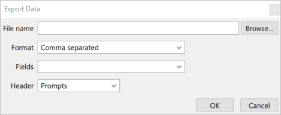

Used to export information from a table or a query to a textfile.
Enter the file name to export to or select an existing one from the Browse.
The Format combo box allows you to select the format to output your information.
The Output header? check box allows you to select whether or not to output a header to the file. The contents of the header depends on the format you choose.